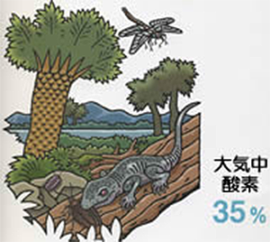
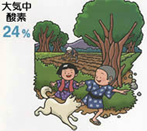
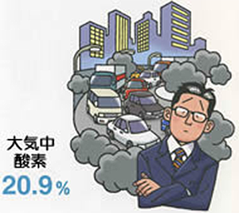
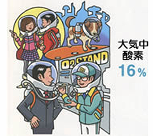
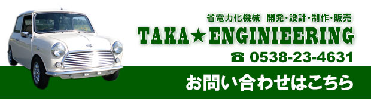

タカエンジニアリング 静岡県袋井市 省電力化機器 エコ関連商品
エコ関連商品
電気自動車
電動スクーター
電気部品
健康関連グッズ
ドリームプラス
イー・ミスト せせら
エッセンシャルオイル
アイデア商品
アイデアを具体化
ＬＥＤホームプランター
打音解析測定装置
会社案内
会社概要
お問い合わせ
個人情報保護
当サイトについて
サイトマップ
リンク
（営業時間）
9：00〜19：00
（ 休 日 ）
土、日、祭日、祝日
3億年前 生き物が進化し続けた時代
海中で飽和した酸素は、大気に向かって飛び出し、大気中の酸素濃度をどんどん高めていきます。 上空まで昇り、強い紫外線を浴びた酸素は、オゾン(O3)となって、地球を守るシェルターのような役目を持つオゾン層を形成。 次第に地表は気温が安定し、生き物が住みやすい環境が整っていきます。 3億年前の石炭紀になると、酸素濃度が35%にも達し、いろいろな昆虫が巨大化。 前兆2メートルの巨大ムカデや巨大なトンボが発見されています。

100年前 人間にとって最適な酸素濃度とは？
わずか100年前、空気中の酸素濃度は、24％でした。 この濃度は人間が住む地球の環境として理想的だったと言われています。 現在のような環境破壊が進む前、まだ多く残っていた美しい日本の野山からは、次々に酸素が生み出され、大気を満たしていました。 もしかしたら、昔の人は、現代人が驚くほど美味しい酸素を毎日吸っていた、といえるかもしれません。

現在 CO2の増加で02は減少していく
現在の酸素濃度は、20.9%。これは、人類が健康を維持するのに必要な最低限の量であるとされています。 しかし近年、石油･石炭･天然ガスの燃焼のために大気中の酸素(02)が大量に消費されて二酸化炭素(CO2)を排出し、酸素の減少を招いています。 大規模な森林伐採によって地球が砂漠化し、酸素の供給源が減少しているのもおおきな原因です。 生物が生きるために絶対的に欠かせない酸素が減少すれば、人体にさまざまな悪影響を及ぼす危険があることは間違いありません。

未来 生きる限界を超える酸素濃度に･･･
このまま環境破壊が進めば、酸素は確実に減少していくといわれています。 酸素量は、わずかな減少でも体に大きく影響し、19％になると、人は息苦しさを感じ、16％で酸素マスクが必要な状態に、10％で意識がなくなり、8％で失神してしまいます。 いつの日か、それぞれ個人でエアタンクを持ち歩く時代がきてしまうかもしれません。
※(株)健康ジャーナル社 酸素BOOKより転載

